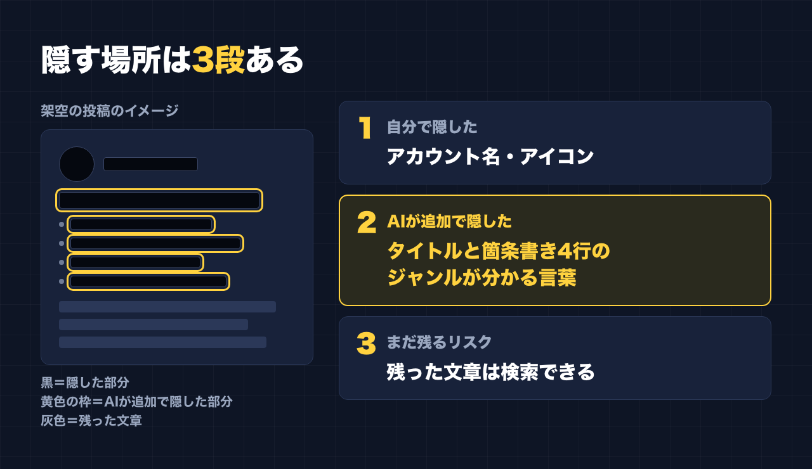

1. タイトルをコピーして、note のタイトル欄に貼る
2. 「本文1をコピー」から順にコピーし、note の本文に貼る
3. 青いラベルの位置に、images フォルダの同じ名前の画像を入れる（本文には貼られません）
※ 見出しが普通の文字になった場合は、その行を選んで「大見出し」を設定してください
アカウント名を消して、アイコンも消しました。でも、それだけでは足りませんでした。
私は、この note とは別にアカウントを運用しています。そのアカウントの投稿の1本が、2026年3月に表示6.4万回、いいね2,065、コメント1,306 になりました。
その投稿のスクリーンショットを、実績として見せようとしたときの話です。
自分で隠したもの
そのアカウントは、名前を出さずに運用しています。なので、スクショを載せる前に、自分で2つを隠しました。
- アカウント名
- アイコン
ここまでは、多くの人がやると思います。
AIが「まだ分かる」と言ったところ
そのスクショには、まだ隠せていない部分がありました。見つけたのは AI（Claude）です。
投稿のタイトルと、箇条書きの4行です。そこに、そのアカウントが何のジャンルなのかが分かる言葉が入っていました。
名前とアイコンが消えていても、ジャンルが分かれば、そこから当たりをつけられてしまいます。AI はその言葉を黒塗りしました。

それでも残っているリスク
もう1つ、AI から言われたことがあります。
黒塗りしていない部分の文章を、そのまま Threads で検索すれば、元の投稿が見つかるかもしれない、ということです。
画像の中の文字でも、読めば打ち込めます。検索されれば、名前もアイコンも関係ありません。
このリスクは、今も残っています。全部を黒塗りすれば見つかりにくくはなりますが、それでは実績として何も伝わりません。どこまで見せて、どこまで隠すかは、自分で決めることになります。
スクショを載せる前のチェックリスト
実績のスクショを載せる人に向けて、今回の学びをチェックリストにします。
必ず隠す
- アカウント名（表示名とIDの両方）
- アイコン
- 投稿に写っている、ほかの人の名前やアイコン（コメント欄など）
見落としやすい
- 投稿のタイトルや1行目に、ジャンルが分かる言葉がないか
- 箇条書きや本文の中に、ジャンルが分かる言葉がないか
- アカウントそのものを思い浮かべられる、決まり文句や口ぐせがないか
忘れがち
- 残した文章は、検索できる。検索したら元の投稿が出てこないか、自分で一度試してみる
- 見つかっても困らない範囲まで、見せる量を減らす
自分で見直すときは、「これを見た人が、元のアカウントにたどり着けるか」という目で見るのがおすすめです。名前やアイコンだけでなく、「何のアカウントか」が分かる言葉と、「検索できる文章」が手がかりになります。
隠したいなら、自分以外の目で見る
今回、タイトルと4行のジャンルの言葉を黒塗りしたのも、検索のリスクを指摘したのも AI でした。自分で隠したのは、名前とアイコンまでです。
実績を見せるのは大事です。でも、別のアカウントを守りたいなら、名前とアイコンを消しただけで安心しないほうがいい。これが今回の学びです。
最後に
ここからは宣伝です。
公式LINEでは、「特典」と送っていただくと、LINE限定のプロンプト5本をお届けしています。
https://lin.ee/RzyA13P
「副業ドラフト」は、AI の質問に答えるだけで、副業に使える強みの棚卸しと Threads の下書きを作るツールです。Threads の下書き3本までは無料で使えます。
https://note-threadssf.onrender.com
Threads では、こうした試行錯誤を日々発信しています。
https://www.threads.com/@shachiku_mao
最後まで読んでいただき、ありがとうございました。